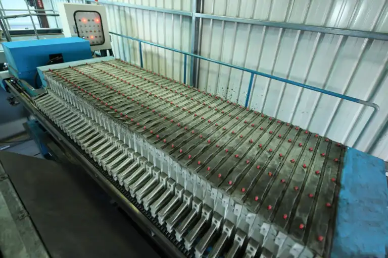
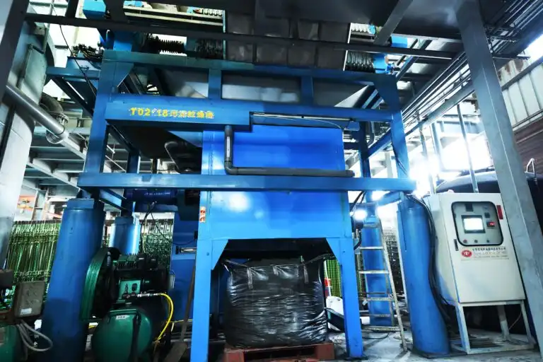

污泥經脫水機加壓成形，含水率可降至 75% 以下，大幅減少後續乾燥與清運負擔。
脫水成形含水率可達 75%
污泥乾燥機 1 噸污泥經 14 小時處理，可使含水率降至 5% 以下；採熱煤油加熱方式具保溫效果，負壓抽氣不與外界空氣接觸，並透過攪拌加熱增加受熱面積，有效去除水分。
1噸 / 14小時，含水率降至 5% 以下
雷德斯TRT自有專利研發之污泥脫水與乾燥設備，實際運轉於客戶現場，長年穩定運作。


以上為「污泥處理」相關技術與藥劑資訊，實際導入方案需依現場水質與產量客製，歡迎直接聯繫我們安排評估。